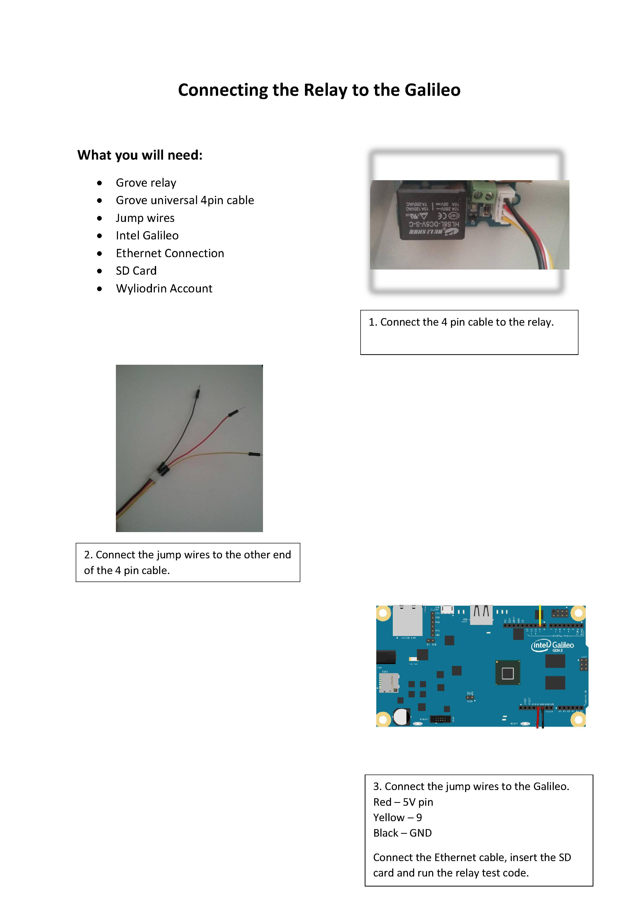
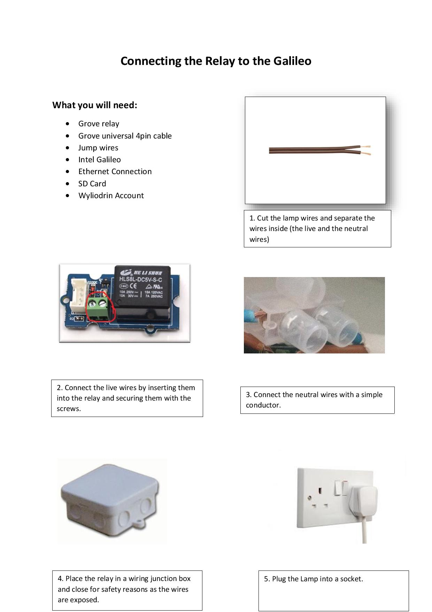

Lamp
Connecting a lamp to a twitter account that will accept tweets from the owner to turn itself on and off.
View on GitHub
Download .zip
Download .tar.gz
Back to Home Page
Sushi Card
Connecting the Relay

Wiring the Lamp
